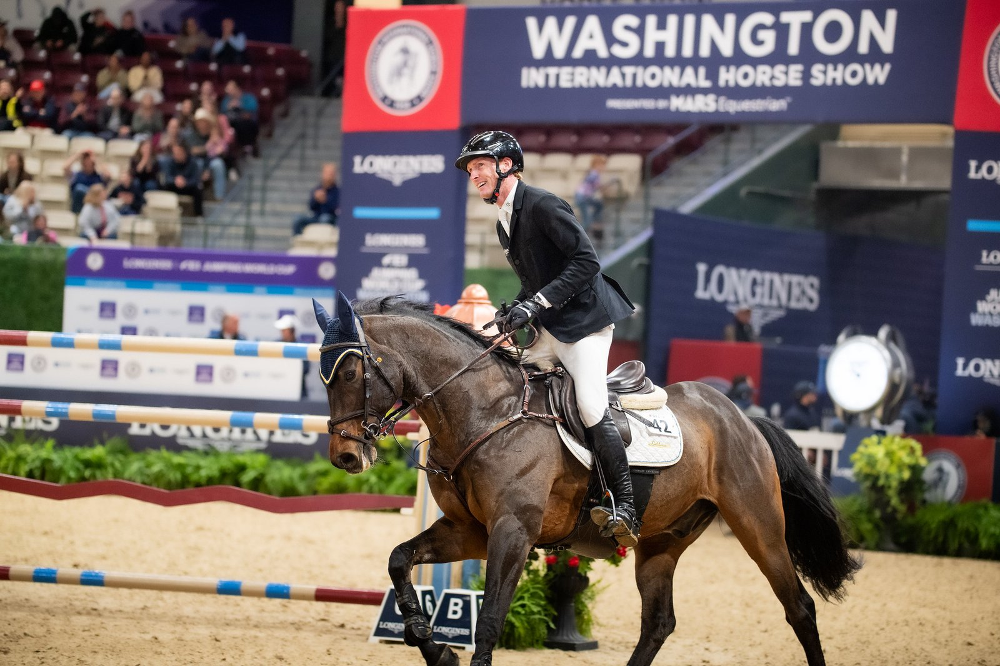

Casas Novas abre la descarga de invitaciones para su CSI5*-W de diciembre
Las entradas gratuitas del concurso coruñés ya pueden bajarse en la web oficial y se presentan desde el móvil. El programa arranca el viernes 4 de diciembre y termina el domingo 6 con el Gran Premio Longines FEI Copa del Mundo.

Quien quiera ver la pista de Casas Novas en directo ya puede descargar su invitación en www.csicasasnovas.com. No hace falta imprimirla: en la entrada basta con enseñarla en la pantalla del teléfono.
El concurso reparte sus pruebas CSI1* y CSI5*-W a lo largo de tres jornadas. El viernes 4 de diciembre, a las 14:00, abren el programa dos pruebas de CSI1*: el Trofeo NH Collection y el Trofeo Champagne Malard. Por la tarde entra en escena el CSI5*-W con el Trofeo Checkpoint y el Trofeo CaixaBank.
El sábado 5 hay cuatro pruebas. Por la mañana, CSI1*: Trofeo Porsche y Trofeo Veolia. Por la tarde, dentro de la categoría 5*, el Trofeo Grupo Eulen y el primer Gran Premio del fin de semana, patrocinado por Longines.
El domingo 6 la mañana vuelve a ser para el CSI1*, con el Trofeo Movistar y el Gran Premio Prosegur Security. La tarde empieza con el Trofeo DHL, del CSI5*-W, y termina con el Gran Premio Longines FEI Copa del Mundo Casas Novas, la prueba que cierra el concurso.
La organización reúne en la pista coruñesa a jinetes del panorama internacional junto a jóvenes talentos y promesas de la hípica nacional e internacional. El resto de la información del concurso está en la misma web donde se descargan las invitaciones.
Por Lucía Valdeolmos